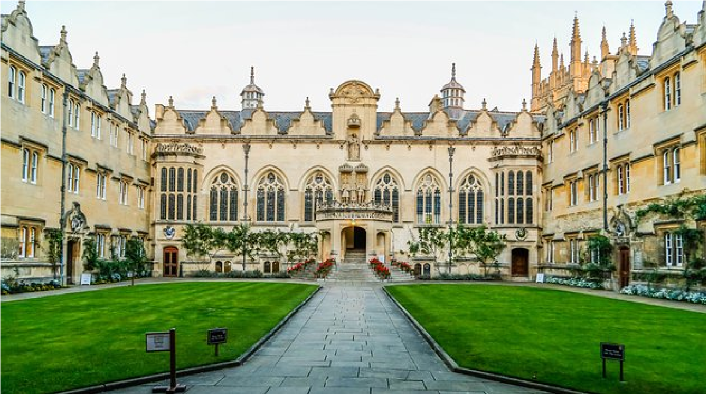

NewG Program
- Graduate School
- Law
- Accountancy
- Arts And Sciences
- Business Administration
- Criminal Justice Education
- Engineering And Architecture
- Hospitality and Tourism Managemnt
- Information Technology and Computer Science
- Nursing
- Teacher Education
- Medical Techonology
- Senior High School
- Junior High school
- Grade School
NewG News
- NewG-CCJE is the Philippines' Top Performing Criminology school for 40 Consecutive Exams
- "Walang Batang Bobo"
- The Roster of New Certified Public Accountants
- The Roster of New Civil Engineers
- The Roster of the New Members of the Philippine Bar
- The Roster of New Architects
- NewG-CJE is still PRC Record Holder as the Rank 1 Top Performing School for 39 Consecutive Exams
- NewG partners with USAID STRIDE, TIPI to pilot Professional Science Master's in Information Technology
- NewG helms Mass Training of STEM Senior High Teachers from CAR
- NewG-CJE, the PRC Record Holder as the Rank 1 Top Performing School for 38 Consecutive Exams
NewG Announcements
- NewG-SHS Sections & Room Assignments for SY 2017-18
- NewG-SHS Parents' General Assembly
- Enrollment Schedule for Grade School & Junior High School
- NewG Criminology Review Classes for the December 2017 Board Examination
- The May 2016 Roster of New Certified Public Accountants
- NewG University, Top 10 Best Performing Accountancy Schools in the Philippines
- NewG opens application for NCCA Graduate Degree for Cultural Education Program
- The October 2015 Roster of New Criminologists
- NewG JaguarTech wins the Android Masters 2015 - Utility/Productivity Category
- The October 2015 Roster of New Certified Public Accountants
NewG Monthly Archive
- March 2015
- May 2015
- June 2015
- July 2015
- August 2015
- September 2015
- October 2015
- November 2015
- December 2015
- January 2016
- February 2016
- March 2016
- May 2016
- June 2016
- July 2016
- August 2016
- January 2017
- February 2017
- March 2017
- April 2017
NewG Calendar

NewG Social
NewG Contact
Baguio City, Philippines
Phone: (+63)9 15-1515-155
Email: masterme0923@gmail.com
Admissions

NewG students create and apply knowledge by thinking and doing, preparing for leadership in a rapidly changing world.
General Admission Requirements
Graduates of foreign and Philippine high schools accredited by the Department of Education (DepEd) may be admitted as freshmen into the University based on the following: Performance in the NewG University Admission Test (NewG CAT); and Weighted average of final grades obtained in high school. A total combined score of 1,200 for the verbal and mathematics subtests in the Scholastic Aptitude Test (SAT) will also qualify an applicant for automatic admission as freshman to the University.
The NewG CAT
Those who wish to study at the university take the Admission Test (NewG CAT). It is administered on the first weekend of August every year. The NewG CAT is a four-hour long examination consisting of subtests on language proficiency, reading comprehension, mathematics and science. The NewG CAT is in English and Filipino. Standardized scores on these subtests are combined with the weighted average of final grades in the first three (3) years of high school to determine qualification into UP. Moreover, to implement the policy of democratization to make the UP studentry more representative of the nation’s population, socio-economic and geographic considerations are factored in the selection of campus qualifiers. NewG CAT applicants are ranked based on their admission grades which are the combinedUPCAT scores, high school grades, and equity factors where applicable. Admission grades like the University Predicted Grade measure the applicant’s potential to do well in the University. Every year, thousands of senior high school students take the NewG CAT exam at UP constituent units and designated exam centers across the country. In 2010, over 65,000 examinees took the NewG CAT. For more details, please go to the Office of Admissions website. Those who want to study at the NewG Open University, may want to check this link for instructions.
Graduate students
Requirements for graduate programs vary according to those set by the colleges and units. The programs offered by the constituent universities can be browsed over with the links the following links:thumb_college of nursing clinical simulation lab1.
Transferees
For transferees, here are links with the necessary information.
Foreign students
Information on admission of foreign students may be found at the following pages:
Scholarships
There are a number of private and government funded scholarships available to UP students, both in the undergraduate and graduate level. To view the updated list of these scholarships, please visit the links below: